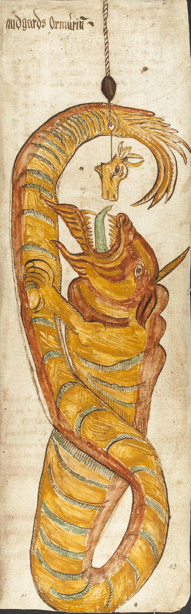

This project takes a single Wikipedia article for the 2018 video game God of War — and progressively lifts its content into a Linked Open Data graph. Fifteen entities are identified across three narrative layers (production, fictional, mythological) plus two subject concepts; encoded in TEI/XML with authority reconciliation to Wikidata and VIAF; transformed into an interactive HTML rendering; modelled conceptually against a reused vocabulary of dcterms, schema.org, FOAF, SKOS, and DBpedia; and finally serialised as an RDF/Turtle graph of 104 triples across 18 subjects.
The interesting modelling problem lies in how the game reinterprets its mythological source. The 2018 God of War takes six figures from Norse mythology: Odin, Thor, Freyja, Baldur, Loki, Jörmungandr, and redraws their genealogy in ways that do not match the received tradition: in the game Freyja is Baldur's mother, where the Prose Edda attributes that role to Frigg; the young character Atreus is revealed to be Loki, the mythological father of the World Serpent whom the pair encounter on the boat. Standard vocabularies do not carry a property that means "fictional reinterpretation of a mythological figure", so this project introduces a single coined term, gow:reinterprets, as a subproperty of dcterms:relation. The graph is built so that a mythological figure's Wikidata identity is preserved (through gow:reinterprets) while the game's alternative genealogy is stated in its own right (through schema:children), without collapsing the two into a single owl:sameAs assertion.
Course context
Individual project for the Information Science and Cultural Heritage course, taught by Prof. Francesca Tomasi and Prof. Marilena Daquino in the Digital Humanities and Digital Knowledge (DHDK) MA at the University of Bologna, academic year 2025-2026.
Myth and reinterpretation, side by side
For each figure, the traditional depiction and the game's portrayal are shown together, with a short note on where the game follows its source and where it departs from it, the same distinction that gow:reinterprets and schema:children keep separate in the RDF graph.
Jörmungandr


The most dramatic tonal inversion of any figure in the game. In myth, Jörmungandr is a world-ending threat, fated to kill and be killed by Thor at Ragnarök — the manuscript shown fixes it in a static heraldic coil, an emblem of doom. The game instead makes it a character with dialogue (translated by Atreus) who treats Kratos and Atreus as old friends, thanks to the story's nonlinear sense of time — from apocalyptic monster to companion, without changing its size, its name, or its place in the family tree that gow:loki schema:children gow:jormungandr still records.
How to read this site
The site is organised in three sections that follow the three phases of the LODLAM workflow. Each section explains a methodological choice, shows the artefact produced, and links to the raw file.
Knowledge Organization
Selecting the topic, identifying entities and relations across three layers, encoding them in TEI/XML with authority reconciliation, and rendering the article as interactive HTML.
Phase 2Conceptual Model
Reusing standard vocabularies (dcterms, schema.org, FOAF, SKOS, DBO) and coining one new property — gow:reinterprets — to capture the fictional-adaptation-of-myth relation.
Knowledge Representation
Building the RDF/Turtle graph from TEI-defined nodes and relations with rdflib, differentiating reconciliation strategy per entity type, and closing the fiction↔myth loop.
Possible future enrichment
The current graph is deliberately scoped as a representative model rather than an exhaustive catalogue of the game's world. God of War (2018) offers many further points of contact between fiction and Norse tradition that could extend the project while testing whether the present modelling choices remain effective at a larger scale.
Extending entities, sources, and relations
A future version could include Faye/Laufey and her mythological counterpart; Thor's sons Magni and Modi; the dwarven smiths Brok and Sindri; further objects, places, and family relations; and textual sources such as the Poetic Edda and the Prose Edda. The pipeline is prepared for that growth: new entity definitions and <relation> elements can be added to the TEI and transformed without writing entity-specific RDF code. Representing the Eddas as source works would also make it possible to state more explicitly which traditional accounts support each comparison, adding a provenance layer to the existing distinction between in-game facts and mythological identities. The same model could later be extended to God of War Ragnarök (2022), allowing reinterpretations to be compared across multiple instalments without collapsing their narrative contexts.